<!DOCTYPE html PUBLIC "-//W3C//DTD XHTML 1.0 Transitional//EN" "http://www.w3.org/TR/xhtml1/DTD/xhtml1-transitional.dtd">
<html xmlns="http://www.w3.org/1999/xhtml">
<head>
<meta name="generator" content="NanoBlogger 3.1" />
<meta name="robots" content="all" />
<meta name="revisit-after" content="31 days" />
<meta http-equiv="Content-Type" content="text/html; charset=iso-8859-1" />

<title>Kurt's Weblog: November 2009 Archives</title>

<link rel="stylesheet" href="../styles/nb_default.css" type="text/css" />
<link rel="shortcut icon" href="../images/favicon.ico" />
<link rel="alternate" type="application/rss+xml" title="RSS 2.0" href="../rss.xml" />
<link rel="alternate" type="application/rss+xml" title="RSS 1.0" href="../index.xml" />
<link rel="alternate" type="application/atom+xml" title="Atom 0.3" href="../atom.xml" />

</head>

<body>

<div id="banner">
<h1><a href="../index.html" accesskey="1">Kurt's Weblog</a></h1>
<span class="description">electronic work log</span>
</div>

<div id="content">

<div class="blog">
<div id="menu">
	<a href="../index.html">Main</a>
</div>
</div>

<div class="blog">
<div class="item">
<a id="e2009-11-30T12_09_11.txt" name="e2009-11-30T12_09_11.txt"></a>
<h2 class="date">11.30.2009 12:09</h2>
<div class="blogbody">
<h3 class="title">AIS on the International Space Station</h3>
<div class="item-description">
<a href="http://www.esa.int/SPECIALS/Space_Engineering/SEMWN5W0EZF_0.html">Columbus to host worldwide sea traffic tracking experiment</a>
<pre>ESA's Columbus module on the International Space Station is being
fitted with experimental hardware to track the passage of ships across
the world's oceans. A pair of European-built signal receivers designed
for wide-area vessel detection are being ferried to the orbital
outpost aboard Japan's newly-launched H-II Transfer Vehicle.
...</pre>
Not the most cost effective way to deploy AIS, but amusing.
</div>
</div>

<div class="posted">
<br />Posted by <span class="item-creator">Kurt</span>
| <a class="link" href="2009-11.html#e2009-11-30T12_09_11.txt">Permalink</a>

<!-- <br /><a href="archives/2009-12-01T06_56_24.html#comments">Comments</a> -->
</div>
</div>
<div class="item">
<a id="e2009-11-29T18_13_16.txt" name="e2009-11-29T18_13_16.txt"></a>
<h2 class="date">11.29.2009 18:13</h2>
<div class="blogbody">
<h3 class="title">hdf in fink - success and failure</h3>
<div class="item-description">
Several of us have been looking at trying to get hdf 4 to work
properly in fink.  If you know how to make it work on 10.5 PPC/Intel
and 10.6, help would be greatly appreciated.  HDF 4 has been a problem
child for a while.  The initial failure of HDF trying to build itself
with the xlf compile (never heard of this one before) was fixed with a
F77=gfortran configure option, but then it fails in C code with uint16
not being defined.  Very strange.  The details are here: <a
href="http://paste.lisp.org/display/91241#1">http://paste.lisp.org/display/91241#1</a>.
It would be nice to have a single info file for hdf4 again that does
the right thing.  Thanks to Raymond Garcia for taking the lead on
getting HDF 4 to work on 10.6.  We also have not yet looked at hdf4 in
10.6 64-bit builds.
</div>
</div>

<div class="posted">
<br />Posted by <span class="item-creator">Kurt</span>
| <a class="link" href="2009-11.html#e2009-11-29T18_13_16.txt">Permalink</a>

<!-- <br /><a href="archives/2009-11-30T12_09_11.html#comments">Comments</a> -->
</div>
</div>
<div class="item">
<a id="e2009-11-28T18_48_11.txt" name="e2009-11-28T18_48_11.txt"></a>
<h2 class="date">11.28.2009 18:48</h2>
<div class="blogbody">
<h3 class="title">Using QGIS to view PostGIS data</h3>
<div class="item-description">
I've tried several times in the past to get my data from PostGIS to
show up in QGIS and I never figured it out until today.  The punch line
is to create you database tables using "WITH OID".  I had created two
point and 1 line tables in my database.  In the add PostGIS layers dialog,
I saw my 3 tables, but there was a blank in the primary key column.  The
first problem is that the QT drop-down selector doesn't show.  If you click
in that blank space, you will see the possible key fields.  This has nothing
to do with what you call your PRIMARY KEY when you create the table.
<br /><br />
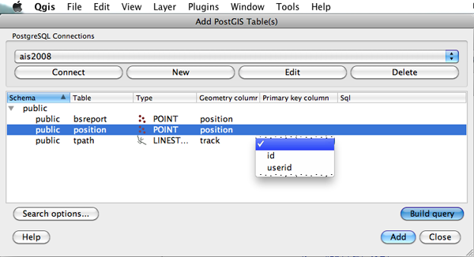
<br /><br />
The second problem I had was that the "Add" button was always grey.
Thanks to a kind person on the QGIS IRC channel, I now know that I
have to create my table with knowledge of the <a
href="http://www.postgresql.org/files/documentation/books/aw_pgsql/node71.html">PostgreSQL
OID</a> information.  OIDs are number assigned to each row in
PostgreSQL that are unique across all tables <b>and databases</b>.  For example,
in my ais_pg_transitlines_noMakeLines.py script, here is my new create statement:
<pre>CREATE TABLE tpath
(
  id INTEGER NOT NULL REFERENCES transit(id),
  userid INTEGER NOT NULL
) <b>WITH OIDS</b>;
SELECT AddGeometryColumn('tpath','track',4326,'LINESTRING',2);</pre>
I can now see the oids in my table:
<pre><b>SELECT id,userid,oid FROM tpath LIMIT 10;</b>
 id | userid |  oid  
====+========+======
  1 |      0 | 35963
  2 |      0 | 35965
  3 |      0 | 35967
  4 |      0 | 35968
  5 |      1 | 35970
  6 |      1 | 35971
  7 |    310 | 35973
  8 |    310 | 35975
  9 |  80396 | 35977
 10 |  80399 | 35979</pre>
And with that, I can now add my layer into PostGIS and view the lines:
<br /><br />
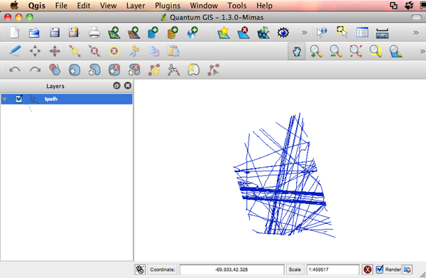
<br /><br />
Only trouble is that I'm getting this error:
<pre>Your PostGIS installation has no GEOS support.
Feature selection and identification will not work properly.
Please install PostGIS with GEOS support (<a href="http://geos.refractions.net">http://geos.refractions.net</a>)</pre>
I do have GEOS installed in my PostGIS installation.  Things like this work:
<pre><b>SELECT ST_Extent(track) FROM tpath;</b>
                                 st_extent                                 
==========================================================================
 BOX(-70.5970764160156 42.093505859375,-70.0352401733398 42.7661170959473)</pre>
But digging farther, I sliced and diced my PostGIS install:
<pre><b>SELECT ST_Buffer(track,100) FROM tpath LIMIT 1;</b>
ERROR:  buffer:: operation not implemented - compile PostGIS with JTS or GEOS support</pre>
The PostGIS PG/SQL code is loaded from this file: /sw32/share/doc/postgis83/lwpostgis.sql
We can open it up and see what buffer is doing:
<pre>CREATE OR REPLACE FUNCTION buffer(geometry,float8)
   RETURNS geometry
   AS '/sw32/lib/postgresql-8.3/liblwgeom.so','buffer'
   LANGUAGE 'C' IMMUTABLE STRICT; -- WITH (isstrict,iscachable);</pre>
Time to follow that file path to the shared library.
<pre>ls -l /sw32/lib/postgresql-8.3/liblwgeom*
-rwxr-xr-x  1 root  admin  504388 Oct 25 21:19 /sw32/lib/postgresql-8.3/liblwgeom.1.3.so
lrwxr-xr-x  1 root  admin      16 Oct 25 21:19 /sw32/lib/postgresql-8.3/liblwgeom.1.so -&gt; liblwgeom.1.3.so
lrwxr-xr-x  1 root  admin      16 Oct 25 21:19 /sw32/lib/postgresql-8.3/liblwgeom.so -&gt; liblwgeom.1.3.so</pre>
Macs have otool, which will let us see what a library is linked against (similar to ldd on normal Unix machines).
<pre><b>otool -L /sw32/lib/postgresql-8.3/liblwgeom.1.3.so</b>
/sw32/lib/postgresql-8.3/liblwgeom.1.3.so:
        /sw32/lib/libproj.0.dylib (compatibility version 7.0.0, current version 7.6.0)
        /usr/lib/libSystem.B.dylib (compatibility version 1.0.0, current version 124.1.1)</pre>
On one of my Mac OSX 10.5 machines, I can see that libgeos3 did indeed make it into the build.
<pre><b>otool -L /sw/lib/postgresql-8.3/liblwgeom.1.3.so</b>
/sw/lib/postgresql-8.3/liblwgeom.1.3.so:
        /sw/lib/libgeos3/libgeos_c.1.dylib (compatibility version 6.0.0, current version 6.2.0)
        /sw/lib/libproj.0.dylib (compatibility version 6.0.0, current version 6.5.0)
        /usr/lib/libgcc_s.1.dylib (compatibility version 1.0.0, current version 1.0.0)
        /usr/lib/libSystem.B.dylib (compatibility version 1.0.0, current version 111.1.4)</pre>
Back to the drawing boards.
<br /><br />
<b>Update 29-Nov-2009:</b> Recompiled postgis83 1.3.5 and it works
now.  I have no idea why it didn't get libgeos3 linked in correctly
before.
</div>
</div>

<div class="posted">
<br />Posted by <span class="item-creator">Kurt</span>
| <a class="link" href="2009-11.html#e2009-11-28T18_48_11.txt">Permalink</a>

<!-- <br /><a href="archives/2009-11-29T18_13_16.html#comments">Comments</a> -->
</div>
</div>
<div class="item">
<a id="e2009-11-25T09_32_23.txt" name="e2009-11-25T09_32_23.txt"></a>
<h2 class="date">11.25.2009 09:32</h2>
<div class="blogbody">
<h3 class="title">AGU gives Author Choice</h3>
<div class="item-description">
Woohoo!  This is good.  However, I just checked how much one of my
published papers would cost to release: $1338.75.  Why am I using
journals again?  Oh yeah... permanent archive, peer review, and career
credit.  If being a professor didn't require Journal publications, I
would definitely go elsewhere.
<a href="http://www.agu.org/pubs/authorchoice.shtml">Author Choice for Open Access</a>
<pre>AGU journals now offer authors the opportunity to make their articles
open for others to read for free. Authors choosing this option pay a
fee based on article length and number of figures; these charges are
designed to offset the potential loss of subscription income.</pre>
It's clear from looking at Web of Science, that very few of my true
journal papers are being used.  The impacts of my non-journal
activities are much greater: giving talks, presenting posters, blogging, and posting on YouTube.  Sigh.
</div>
</div>

<div class="posted">
<br />Posted by <span class="item-creator">Kurt</span>
| <a class="link" href="2009-11.html#e2009-11-25T09_32_23.txt">Permalink</a>

<!-- <br /><a href="archives/2009-11-28T18_48_11.html#comments">Comments</a> -->
</div>
</div>
<div class="item">
<a id="e2009-11-24T07_49_25.txt" name="e2009-11-24T07_49_25.txt"></a>
<h2 class="date">11.24.2009 07:49</h2>
<div class="blogbody">
<h3 class="title">Icon heading in Google Earth - broken?</h3>
<div class="item-description">
I throught I would give the <a
href="http://code.google.com/apis/kml/documentation/kmlreference.html#heading">&gt;heading&lt;</a>
tag in KML a try.  At first, the results looked great:
<br /><br />
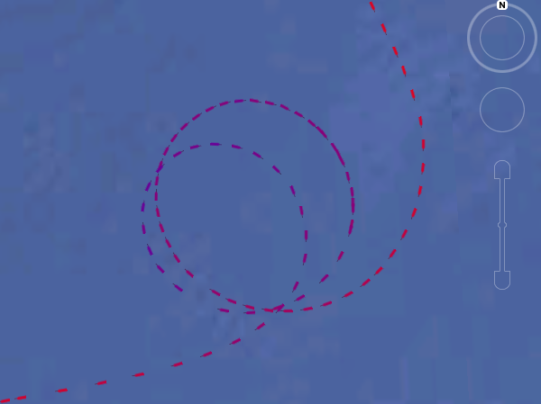
<br /><br />
When I rotate the camera, the ship position reports disintegrate.  It
really seams like the heading should apply relative to the earth, not
relative to the camera!  <b>This is a bug in the Mac version.  Google Earth on Windows XP appears to work correctly.</b>
<br /><br />
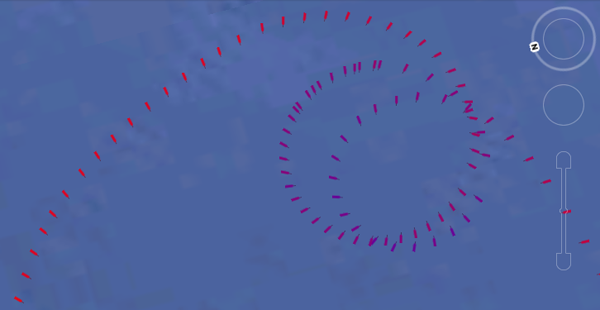
<br /><br />
Try it for yourself: <a href="../attachments/2009-11/ship.kmz">ship.kmz</a>
<br /><br />
Also, Google Earth definitely needs a more compact (both in terms of
disk space and memory when loaded) representation of Points.  I wish
that Points could look something like this:
<pre><tt><b><font color="#0000FF">&lt;Placemark&gt;</font></b>
  <b><font color="#0000FF">&lt;name&gt;</font></b>ship<b><font color="#0000FF">&lt;/name&gt;</font></b>
  <b><font color="#0000FF">&lt;Point</font></b> <font color="#009900">heading</font><font color="#990000">=</font><font color="#FF0000">"315.2"</font> <font color="#009900">icon</font><font color="#990000">=</font><font color="#FF0000">"tug.png"</font> <font color="#009900">color</font><font color="#990000">=</font><font color="#FF0000">"ff0000ff"</font> <font color="#009900">scale</font><font color="#990000">=</font><font color="#FF0000">"0.5"</font> <font color="#009900">unix_timestamp</font><font color="#990000">=</font><font color="#FF0000">"1259066628.96"</font><b><font color="#0000FF">&gt;</font></b>
    <b><font color="#0000FF">&lt;coordinates&gt;</font></b>-70.39408,42.35226,0<b><font color="#0000FF">&lt;/coordinates&gt;</font></b>
  <b><font color="#0000FF">&lt;/Point&gt;</font></b>
<b><font color="#0000FF">&lt;/Placemark&gt;</font></b>
</tt></pre>
With other software that I use, it's not a big deal to pull in millions of points.  Google earth starts to slow down with just 3K points.
</div>
</div>

<div class="posted">
<br />Posted by <span class="item-creator">Kurt</span>
| <a class="link" href="2009-11.html#e2009-11-24T07_49_25.txt">Permalink</a>

<!-- <br /><a href="archives/2009-11-25T09_32_23.html#comments">Comments</a> -->
</div>
</div>
<div class="item">
<a id="e2009-11-21T10_29_19.txt" name="e2009-11-21T10_29_19.txt"></a>
<h2 class="date">11.21.2009 10:29</h2>
<div class="blogbody">
<h3 class="title">Updated diagram for the RTCM sector zone message</h3>
<div class="item-description">
At the RTCM meeting last week, I created an updated illustration for
how the sector zone type should work.  There was some confusion before
on how sectors worked with the previous figure that only showed the
left hand case.  Now the right hand case shows what we described in
the text for a zone that spans true north.
<br /><br />
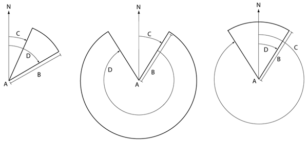
</div>
</div>

<div class="posted">
<br />Posted by <span class="item-creator">Kurt</span>
| <a class="link" href="2009-11.html#e2009-11-21T10_29_19.txt">Permalink</a>

<!-- <br /><a href="archives/2009-11-24T07_49_25.html#comments">Comments</a> -->
</div>
</div>
<div class="item">
<a id="e2009-11-21T10_23_43.txt" name="e2009-11-21T10_23_43.txt"></a>
<h2 class="date">11.21.2009 10:23</h2>
<div class="blogbody">
<h3 class="title">Inside the Healy</h3>
<div class="item-description">
A quick and partial tour of the inside of the Healy.
<br /><br />

<br /><br />

<br /><br />
This is the aft control area for the ship and the winches.  This is
just aft of the winch room on the starboard side.
<br /><br />

<br /><br />
Here is the Knudsen subbottom profiler and a backup port side.  Just
out of view is the rack for the gravity meters.  The gravity meter
rack rack component heaters must be kept warm or it will take 6 months to
recalibrate them, so they have a couple days worth of battery backup.
<br /><br />

<br /><br />
Here are the actual gravity meters.  Not to be used as a stable
platform for sodas or work tools.
<br /><br />
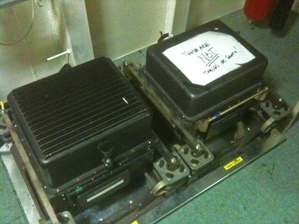
<br /><br />
The rack for the old Seabeam 2100 that is being removed.
<br /><br />

</div>
</div>

<div class="posted">
<br />Posted by <span class="item-creator">Kurt</span>
| <a class="link" href="2009-11.html#e2009-11-21T10_23_43.txt">Permalink</a>

<!-- <br /><a href="archives/2009-11-21T10_29_19.html#comments">Comments</a> -->
</div>
</div>
<div class="item">
<a id="e2009-11-21T09_44_07.txt" name="e2009-11-21T09_44_07.txt"></a>
<h2 class="date">11.21.2009 09:44</h2>
<div class="blogbody">
<h3 class="title">Healy in dry dock</h3>
<div class="item-description">
This week I visited Seattle for eNav09, the RTCM AIS for VTS working
group, and some meetings with the Seattle NOAA folks.  
<br /><br />

<br /><br />
I got a real treat on the last evening: Dale Chayes gave 3 of us a
tour of the USCGC Healy Ice Breaker while she is in the Todd Shipyard
for maintenance and to have the Seabeam multibeam replaced with a new
and much more accurate multibeam sonar.  I got a bunch of photos with
my iPhone, so unfortunetly, they are pretty grainy in the low light /
high contrast conditions that exist in the dry dock.  I've been on a
US Navy cutter in dry dock before, but I never got to get down under
that vessel.
<br /><br />
This first image is from up on the wall of the dry dock looking at the
aft / starboard end of the ship.  The white columns in the middle are
dry dock supports to distrute the weight of the ship.  You can see the
starboard propellar shaft as the propeller and ruder have been removed.
<br /><br />

<br /><br />
This is right behind the ship.  You can see the same white columns for
support and both propeller shafts.  From this view on, everything in the photos is stuff that is underwater and out of sight normally.
<br /><br />

<br /><br />
The port propeller shaft has been pulled out about 10 feed.  There is
a onstruction worker on the right for scale.
<br /><br />

<br /><br />
The ice knife is under the bow to help break up ice.
<br /><br />

<br /><br />
Here is one of the OSU guys holding up a 2x4 for scale of a dent that
was discovered once the dry dock was raised out of the water.  The
crew does not know when this happened.  Breaking ice is a noisy afair
and the ice that did this likely didn't really cause much of a bump
compared to the normal ice breaking.
<br /><br />

<br /><br />
This looking up the side of the ship so that you can see how deap the dent is.  Again, this is a 2x4 for scale
<br /><br />

<br /><br />
The main reason we were out at the dry dock was to check out the
upgrade of the multibeam.  The old transmit array was up in the aft
end of the ice knife.  The array has been removed, but the old window
will be put back in the ship incase some other instrument needs that
space in the future.  I wasn't able to get a picture in the very dark
machining area, but the new window frame is being cut next next week.
The steel frame will have a very large single titanium window.
<br /><br />

<br /><br />
This is directly under the center of the center of the ship.  The
crews are cutting through the fuel tanks area here to make room for
the much larger transmit array.
<br /><br />

<br /><br />
This is the reworked larger area for the receive array.  The receiver
array's long direction runs athwart ship.  This is the typical Mills Cross array layout.
<br /><br />

</div>
</div>

<div class="posted">
<br />Posted by <span class="item-creator">Kurt</span>
| <a class="link" href="2009-11.html#e2009-11-21T09_44_07.txt">Permalink</a>

<!-- <br /><a href="archives/2009-11-21T10_23_43.html#comments">Comments</a> -->
</div>
</div>
<div class="item">
<a id="e2009-11-17T16_18_49.txt" name="e2009-11-17T16_18_49.txt"></a>
<h2 class="date">11.17.2009 16:18</h2>
<div class="blogbody">
<h3 class="title">Legal aspects of AIS</h3>
<div class="item-description">
I am currently listening to Alan Weigel's talk a eNav09.  His talk is "Don't Forget the Legal Side".  He just talked about his court case:
<br /><br />
Cresent Towing & Salvage v. M/V CHIOS BEAUTY, Civ. No. 05-4207, 2008
U.S. Dist. LEXIS 62247 (E.D. La. Aug. 14, 2008):
<pre>The Court does not find the AIS evidence to be conclusive evidence of
individual vessel movement.</pre>
I have to disagree with the court on this one.  Sometimes you can say
that the postitions are not accurate, but in most cases, they are
accurate.
</div>
</div>

<div class="posted">
<br />Posted by <span class="item-creator">Kurt</span>
| <a class="link" href="2009-11.html#e2009-11-17T16_18_49.txt">Permalink</a>

<!-- <br /><a href="archives/2009-11-21T09_44_07.html#comments">Comments</a> -->
</div>
</div>
<div class="item">
<a id="e2009-11-17T09_17_46.txt" name="e2009-11-17T09_17_46.txt"></a>
<h2 class="date">11.17.2009 09:17</h2>
<div class="blogbody">
<h3 class="title">New version of Aldebaran II whale notices</h3>
<div class="item-description">
Sean put in some hard work and just in time for eNavigation 2009: we
have a whale notice display that is working!
<br /><br />
<object width="480" height="385"><param name="movie" value="http://www.youtube.com/v/mN1IFdgAEiA&hl=en_US&fs=1&color1=0x006699&color2=0x54abd6"></param><param name="allowFullScreen" value="true"></param><param name="allowscriptaccess" value="always"></param><embed src="http://www.youtube.com/v/mN1IFdgAEiA&hl=en_US&fs=1&color1=0x006699&color2=0x54abd6" type="application/x-shockwave-flash" allowscriptaccess="always" allowfullscreen="true" width="480" height="385"></embed></object>
<br /><br />
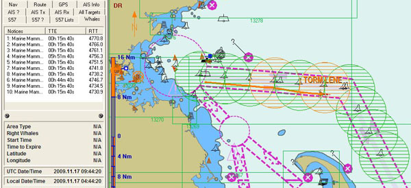
</div>
</div>

<div class="posted">
<br />Posted by <span class="item-creator">Kurt</span>
| <a class="link" href="2009-11.html#e2009-11-17T09_17_46.txt">Permalink</a>

<!-- <br /><a href="archives/2009-11-17T16_18_49.html#comments">Comments</a> -->
</div>
</div>
<div class="item">
<a id="e2009-11-16T10_53_33.txt" name="e2009-11-16T10_53_33.txt"></a>
<h2 class="date">11.16.2009 10:53</h2>
<div class="blogbody">
<h3 class="title">mdbtools for working with MS Access databases</h3>
<div class="item-description">
I'm working on some schema migrations for a MS Access database and
again <a href=" http://mdbtools.sourceforge.net">mdbtools</a> is
proving to be very helpful.  I started off thinking about writing to tool to
parse the XML XSD schema output, but while not to hard, it was going
to take some time.
<pre><b>grep '<xsd:element name'  sightings.xsd  | grep sqlSType</b>
<tt><b><font color="#0000FF">&lt;xsd:element</font></b> <font color="#444400">name</font><font color="#990000">=</font><font color="#FF0000">"key"</font> <font color="$444400">minOccurs</font><font color="#990000">=</font><font color="#FF0000">"1"</font> <font color="$444400">od:jetType</font><font color="#990000">=</font><font color="#FF0000">"autonumber"</font> <font color="$444400">od:sqlSType</font><font color="#990000">=</font><font color="#FF0000">"int"</font> <font color="$444400">od:autoUnique</font><font color="#990000">=</font><font color="#FF0000">"yes"</font> <font color="$444400">od:nonNullable</font><font color="#990000">=</font><font color="#FF0000">"yes"</font> <font color="$444400">type</font><font color="#990000">=</font><font color="#FF0000">"xsd:int"</font><b><font color="#0000FF">&gt;</font></b>
<b><font color="#0000FF">&lt;xsd:element</font></b> <font color="$444400">name</font><font color="#990000">=</font><font color="#FF0000">"ood"</font> <font color="$444400">minOccurs</font><font color="#990000">=</font><font color="#FF0000">"1"</font> <font color="$444400">od:jetType</font><font color="#990000">=</font><font color="#FF0000">"longinteger"</font> <font color="$444400">od:sqlSType</font><font color="#990000">=</font><font color="#FF0000">"int"</font> <font color="$444400">od:nonNullable</font><font color="#990000">=</font><font color="#FF0000">"yes"</font> <font color="$444400">type</font><font color="#990000">=</font><font color="#FF0000">"xsd:int"</font><b><font color="#0000FF">&gt;</font></b>
<b><font color="#0000FF">&lt;xsd:element</font></b> <font color="$444400">name</font><font color="#990000">=</font><font color="#FF0000">"rid"</font> <font color="$444400">minOccurs</font><font color="#990000">=</font><font color="#FF0000">"1"</font> <font color="$444400">od:jetType</font><font color="#990000">=</font><font color="#FF0000">"longinteger"</font> <font color="$444400">od:sqlSType</font><font color="#990000">=</font><font color="#FF0000">"int"</font> <font color="$444400">od:nonNullable</font><font color="#990000">=</font><font color="#FF0000">"yes"</font> <font color="$444400">type</font><font color="#990000">=</font><font color="#FF0000">"xsd:int"</font><b><font color="#0000FF">&gt;</font></b>
<b><font color="#0000FF">&lt;xsd:element</font></b> <font color="$444400">name</font><font color="#990000">=</font><font color="#FF0000">"sighting_date_time"</font> <font color="$444400">minOccurs</font><font color="#990000">=</font><font color="#FF0000">"1"</font> <font color="$444400">od:jetType</font><font color="#990000">=</font><font color="#FF0000">"datetime"</font> <font color="$444400">od:sqlSType</font><font color="#990000">=</font><font color="#FF0000">"datetime"</font> <font color="$444400">od:nonNullable</font><font color="#990000">=</font><font color="#FF0000">"yes"</font> <font color="$444400">type</font><font color="#990000">=</font><font color="#FF0000">"xsd:dateTime"</font><b><font color="#0000FF">&gt;</font></b>
<b><font color="#0000FF">&lt;xsd:element</font></b> <font color="$444400">name</font><font color="#990000">=</font><font color="#FF0000">"species"</font> <font color="$444400">minOccurs</font><font color="#990000">=</font><font color="#FF0000">"0"</font> <font color="$444400">od:jetType</font><font color="#990000">=</font><font color="#FF0000">"longinteger"</font> <font color="$444400">od:sqlSType</font><font color="#990000">=</font><font color="#FF0000">"int"</font> <font color="$444400">type</font><font color="#990000">=</font><font color="#FF0000">"xsd:int"</font><b><font color="#0000FF">&gt;</font></b>
<b><font color="#0000FF">&lt;xsd:element</font></b> <font color="$444400">name</font><font color="#990000">=</font><font color="#FF0000">"group_size"</font> <font color="$444400">minOccurs</font><font color="#990000">=</font><font color="#FF0000">"0"</font> <font color="$444400">od:jetType</font><font color="#990000">=</font><font color="#FF0000">"longinteger"</font> <font color="$444400">od:sqlSType</font><font color="#990000">=</font><font color="#FF0000">"int"</font> <font color="$444400">type</font><font color="#990000">=</font><font color="#FF0000">"xsd:int"</font><b><font color="#0000FF">&gt;</font></b>
<b><font color="#0000FF">&lt;xsd:element</font></b> <font color="$444400">name</font><font color="#990000">=</font><font color="#FF0000">"longitude"</font> <font color="$444400">minOccurs</font><font color="#990000">=</font><font color="#FF0000">"0"</font> <font color="$444400">od:jetType</font><font color="#990000">=</font><font color="#FF0000">"double"</font> <font color="$444400">od:sqlSType</font><font color="#990000">=</font><font color="#FF0000">"float"</font> <font color="$444400">type</font><font color="#990000">=</font><font color="#FF0000">"xsd:double"</font><b><font color="#0000FF">&gt;</font></b>
<b><font color="#0000FF">&lt;xsd:element</font></b> <font color="$444400">name</font><font color="#990000">=</font><font color="#FF0000">"latitude"</font> <font color="$444400">minOccurs</font><font color="#990000">=</font><font color="#FF0000">"0"</font> <font color="$444400">od:jetType</font><font color="#990000">=</font><font color="#FF0000">"double"</font> <font color="$444400">od:sqlSType</font><font color="#990000">=</font><font color="#FF0000">"float"</font> <font color="$444400">type</font><font color="#990000">=</font><font color="#FF0000">"xsd:double"</font><b><font color="#0000FF">&gt;</font></b>
<b><font color="#0000FF">&lt;xsd:element</font></b> <font color="$444400">name</font><font color="#990000">=</font><font color="#FF0000">"geographic_accuracy"</font> <font color="$444400">minOccurs</font><font color="#990000">=</font><font color="#FF0000">"1"</font> <font color="$444400">od:jetType</font><font color="#990000">=</font><font color="#FF0000">"longinteger"</font> <font color="$444400">od:sqlSType</font><font color="#990000">=</font><font color="#FF0000">"int"</font> <font color="$444400">od:nonNullable</font><font color="#990000">=</font><font color="#FF0000">"yes"</font> <font color="$444400">type</font><font color="#990000">=</font><font color="#FF0000">"xsd:int"</font><b><font color="#0000FF">&gt;</font></b>
<b><font color="#0000FF">&lt;xsd:element</font></b> <font color="$444400">name</font><font color="#990000">=</font><font color="#FF0000">"region"</font> <font color="$444400">minOccurs</font><font color="#990000">=</font><font color="#FF0000">"1"</font> <font color="$444400">od:jetType</font><font color="#990000">=</font><font color="#FF0000">"longinteger"</font> <font color="$444400">od:sqlSType</font><font color="#990000">=</font><font color="#FF0000">"int"</font> <font color="$444400">od:nonNullable</font><font color="#990000">=</font><font color="#FF0000">"yes"</font> <font color="$444400">type</font><font color="#990000">=</font><font color="#FF0000">"xsd:int"</font><b><font color="#0000FF">&gt;</font></b>
<b><font color="#0000FF">&lt;xsd:element</font></b> <font color="$444400">name</font><font color="#990000">=</font><font color="#FF0000">"species_id"</font> <font color="$444400">minOccurs</font><font color="#990000">=</font><font color="#FF0000">"1"</font> <font color="$444400">od:jetType</font><font color="#990000">=</font><font color="#FF0000">"longinteger"</font> <font color="$444400">od:sqlSType</font><font color="#990000">=</font><font color="#FF0000">"int"</font> <font color="$444400">od:nonNullable</font><font color="#990000">=</font><font color="#FF0000">"yes"</font> <font color="$444400">type</font><font color="#990000">=</font><font color="#FF0000">"xsd:int"</font><b><font color="#0000FF">&gt;</font></b>
<b><font color="#0000FF">&lt;xsd:element</font></b> <font color="$444400">name</font><font color="#990000">=</font><font color="#FF0000">"behav1"</font> <font color="$444400">minOccurs</font><font color="#990000">=</font><font color="#FF0000">"0"</font> <font color="$444400">od:jetType</font><font color="#990000">=</font><font color="#FF0000">"longinteger"</font> <font color="$444400">od:sqlSType</font><font color="#990000">=</font><font color="#FF0000">"int"</font> <font color="$444400">type</font><font color="#990000">=</font><font color="#FF0000">"xsd:int"</font><b><font color="#0000FF">&gt;</font></b>
<b><font color="#0000FF">&lt;xsd:element</font></b> <font color="$444400">name</font><font color="#990000">=</font><font color="#FF0000">"behav2"</font> <font color="$444400">minOccurs</font><font color="#990000">=</font><font color="#FF0000">"0"</font> <font color="$444400">od:jetType</font><font color="#990000">=</font><font color="#FF0000">"longinteger"</font> <font color="$444400">od:sqlSType</font><font color="#990000">=</font><font color="#FF0000">"int"</font> <font color="$444400">type</font><font color="#990000">=</font><font color="#FF0000">"xsd:int"</font><b><font color="#0000FF">&gt;</font></b>
<b><font color="#0000FF">&lt;xsd:element</font></b> <font color="$444400">name</font><font color="#990000">=</font><font color="#FF0000">"duplicate"</font> <font color="$444400">minOccurs</font><font color="#990000">=</font><font color="#FF0000">"0"</font> <font color="$444400">od:jetType</font><font color="#990000">=</font><font color="#FF0000">"longinteger"</font> <font color="$444400">od:sqlSType</font><font color="#990000">=</font><font color="#FF0000">"int"</font> <font color="$444400">type</font><font color="#990000">=</font><font color="#FF0000">"xsd:int"</font><b><font color="#0000FF">&gt;</font></b>
...</tt></pre>
Instead, I gave mdbtools a try...
<pre><b>mdb-schema -T sightings new-schema.mdb</b>
<tt>mdb<font color="#990000">-</font>schema <font color="#990000">-</font>T sightings sightings<font color="#990000">-</font>prototype<font color="#990000">-</font>v05<font color="#990000">.</font>mdb 
<b><font color="#0000FF">CREATE</font></b> <b><font color="#0000FF">TABLE</font></b> sightings
 <font color="#990000">(</font>
        sighting_date_time      <font color="#009900">DateTime</font> <font color="#990000">(</font>Short<font color="#990000">),</font> 
        group_size              Long Integer<font color="#990000">,</font> 
        longitude               <font color="#009900">Double</font><font color="#990000">,</font> 
        ood                     Long Integer<font color="#990000">,</font> 
        region                  Long Integer<font color="#990000">,</font> 
        species_id              Long Integer<font color="#990000">,</font> 
        duplicate               Long Integer<font color="#990000">,</font> 
        reporting_source        Long Integer<font color="#990000">,</font> 
        reporting_entity        Long Integer<font color="#990000">,</font> 
        <b><font color="#0000FF">key</font></b>                     Long Integer<font color="#990000">,</font> 
        rid                     Long Integer<font color="#990000">,</font> 
        behav1                  Long Integer<font color="#990000">,</font> 
        behav2                  Long Integer<font color="#990000">,</font> 
        action                  Long Integer<font color="#990000">,</font> 
        latitude                <font color="#009900">Double</font><font color="#990000">,</font> 
        comments_private        <font color="#009900">Text</font> <font color="#990000">(</font><font color="#993399">500</font><font color="#990000">),</font> 
        comments_public         <font color="#009900">Text</font> <font color="#990000">(</font><font color="#993399">500</font><font color="#990000">),</font> 
        species                 Long Integer<font color="#990000">,</font> 
        geographic_accuracy     Long Integer
<font color="#990000">);</font></tt></pre>
A little text replacement transformation makes this valid sql...
<pre><tt><b><font color="#0000FF">CREATE</font></b> <b><font color="#0000FF">TABLE</font></b> sightings
 <font color="#990000">(</font>
        sighting_date_time      <font color="#009900">TIMESTAMP</font><font color="#990000">,</font> 
        group_size              INTEGER<font color="#990000">,</font> 
        longitude               REAL<font color="#990000">,</font> 
        ood                     INTEGER<font color="#990000">,</font> 
        region                  INTEGER<font color="#990000">,</font> 
        species_id              INTEGER<font color="#990000">,</font> 
        duplicate               INTEGER<font color="#990000">,</font> 
        reporting_source        INTEGER<font color="#990000">,</font> 
        reporting_entity        INTEGER<font color="#990000">,</font> 
        <b><font color="#0000FF">key</font></b>                     INTEGER<font color="#990000">,</font> 
        rid                     INTEGER<font color="#990000">,</font> 
        behav1                  INTEGER<font color="#990000">,</font> 
        behav2                  INTEGER<font color="#990000">,</font> 
        action                  INTEGER<font color="#990000">,</font> 
        latitude                REAL<font color="#990000">,</font> 
        comments_private        <font color="#009900">VARCHAR</font> <font color="#990000">(</font><font color="#993399">500</font><font color="#990000">),</font> 
        comments_public         <font color="#009900">VARCHAR</font> <font color="#990000">(</font><font color="#993399">500</font><font color="#990000">),</font> 
        species                 INTEGER<font color="#990000">,</font> 
        geographic_accuracy     INTEGER
<font color="#990000">);</font></tt></pre>
This looses all the info about foreign and primary keys, constraints, and other important db information, but it gets me pretty close to what I need.
</div>
</div>

<div class="posted">
<br />Posted by <span class="item-creator">Kurt</span>
| <a class="link" href="2009-11.html#e2009-11-16T10_53_33.txt">Permalink</a>

<!-- <br /><a href="archives/2009-11-17T09_17_46.html#comments">Comments</a> -->
</div>
</div>
<div class="item">
<a id="e2009-11-14T19_24_42.txt" name="e2009-11-14T19_24_42.txt"></a>
<h2 class="date">11.14.2009 19:24</h2>
<div class="blogbody">
<h3 class="title">State of PostGIS video</h3>
<div class="item-description">
Paul Ramsey has a great video online: <a
href="http://blip.tv/file/2788616/">The State of PostGIS</a>.  This is
a great overview talk.  I am really excited about the Geography
feature that should be out soon.  It adds proper handling of the Earth
as a sphere to <a href="http://postgis.refractions.net/">PostGIS</a>.  This will be a huge improvement for global
seafloor mapping projects.  I am also watching the progress of the <a
href="http://www.manning.com/obe/">PostGIS in Action</a> book.  I will
definitely be picking up a copy.
<br /><br />
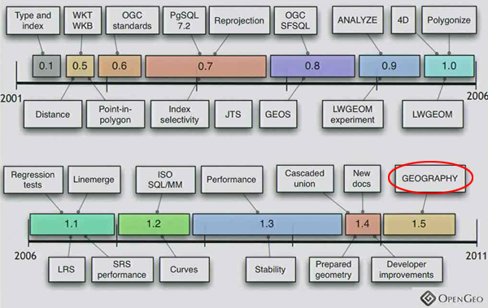
<br /><br />
<embed src="http://blip.tv/play/AYGrtgcC" type="application/x-shockwave-flash" width="480" height="390" allowscriptaccess="always" allowfullscreen="true"></embed> 
</div>
</div>

<div class="posted">
<br />Posted by <span class="item-creator">Kurt</span>
| <a class="link" href="2009-11.html#e2009-11-14T19_24_42.txt">Permalink</a>

<!-- <br /><a href="archives/2009-11-16T10_53_33.html#comments">Comments</a> -->
</div>
</div>
<div class="item">
<a id="e2009-11-14T13_06_07.txt" name="e2009-11-14T13_06_07.txt"></a>
<h2 class="date">11.14.2009 13:06</h2>
<div class="blogbody">
<h3 class="title">Whale notice change</h3>
<div class="item-description">
I've just changed the zone notice for no whales detected to expire
after 20 minutes.  It was 10 minutes before.  If the there is
substantial clock drift on the computer displaying the AIS messages,
the no whales observed can flap... it can dissappear and reappear in a
slow flicker.  This shows how critical it is to have computers track
time and that Windows Time Service is just not up to the task.  Here
is a sample of a decode of a message with the new delay time:
<pre><b>zonemsg_decode.py -v '!AIVDM,1,1,,B,803OvriK`U07Aj0Vh3nt61A9DT;0,0*2D,d-090,S0285,t175107.00,T07.60366941,r00369945,1258221067'</b>
{'DAC': 366, 'RepeatIndicator': 0, 'UserID': 3669739, 'Spare': 0, 'MessageID': 8, 'FI': 34}
ZoneMsg
  dac: 366
  fi: 34
  zone_id: 10
  zone_type: 0 [Right Whales NOT OBSERVED] 
  start_utc_day: 14
  start_utc_hour: 17
  start_utc_minute: 50
  zone_duration_minutes: <b>20</b>
  num zones: 1
  ZoneCircular 9260m radius at (-69.85239, 42.08153)
  ZoneCircular
        radius:         9260m
        longitude:      -69.8523866667
        latitude:       42.0815283333
  Now:        2009-11-14 17:59:19.986791
  Start time: 2009-11-14 17:50:00
  Expires:    2009-11-14 18:10:00
  Remaining:   640 sec
  Remaining:   10.67 min
  Remaining:   0.18 hr</pre>
NOTE: this is the old style of zone from last summer.  The final IMO
message will differ slightly from this.  I've heard that IMO is going
to change things like the order of Longitude and Latitude to be
different than in the ITU AIS specification.
</div>
</div>

<div class="posted">
<br />Posted by <span class="item-creator">Kurt</span>
| <a class="link" href="2009-11.html#e2009-11-14T13_06_07.txt">Permalink</a>

<!-- <br /><a href="archives/2009-11-14T19_24_42.html#comments">Comments</a> -->
</div>
</div>
<div class="item">
<a id="e2009-11-12T09_36_32.txt" name="e2009-11-12T09_36_32.txt"></a>
<h2 class="date">11.12.2009 09:36</h2>
<div class="blogbody">
<h3 class="title">CCOM Wave Tank Maintenance</h3>
<div class="item-description">
 Andy and Paul have drained the wave tank for periodic maintenance...  a view of the tank without any water in it.
<br /><br />

</div>
</div>

<div class="posted">
<br />Posted by <span class="item-creator">Kurt</span>
| <a class="link" href="2009-11.html#e2009-11-12T09_36_32.txt">Permalink</a>

<!-- <br /><a href="archives/2009-11-14T13_06_07.html#comments">Comments</a> -->
</div>
</div>
<div class="item">
<a id="e2009-11-10T09_29_45.txt" name="e2009-11-10T09_29_45.txt"></a>
<h2 class="date">11.10.2009 09:29</h2>
<div class="blogbody">
<h3 class="title">Whales and noise in Physics Today</h3>
<div class="item-description">
<a
href="http://ptonline.aip.org/journals/doc/PHTOAD-ft/vol_62/iss_11/39_1.shtml">Human-generated
sound and marine mammals, Loud anthropogenic noises can alter the
behavior of whales and other marine mammals, sometimes with fatal
consequences</a> by Peter Tyack.
<br /><br />

</div>
</div>

<div class="posted">
<br />Posted by <span class="item-creator">Kurt</span>
| <a class="link" href="2009-11.html#e2009-11-10T09_29_45.txt">Permalink</a>

<!-- <br /><a href="archives/2009-11-12T09_36_32.html#comments">Comments</a> -->
</div>
</div>
<div class="item">
<a id="e2009-11-09T21_11_04.txt" name="e2009-11-09T21_11_04.txt"></a>
<h2 class="date">11.09.2009 21:11</h2>
<div class="blogbody">
<h3 class="title">Port tunneling with socat, not netcat or ssh tunneling</h3>
<div class="item-description">
Chaoyi pointed me at <a href="http://www.dest-unreach.org/socat/">socat</a> for network plumbing issues.  I just gave
it a go forwarding AIS data from one machine to another and it work
great!  On the gateway:
<pre>socat TCP4-LISTEN:9999 TCP4:aissource:12345</pre>
Then, the outside host gets the data like this:
<pre><b>socat - TCP4:gateway:9999</b>
!AIVDM,1,1,,A,15MpsWgP2=Ji0APGRhsefOwP2L0`,0*4A,d-111,S1765,t015347.00,T47.08294235,r003669959,1257818027
!AIVDM,1,1,,B,15Mvw:0P43rjsePFl?J4;?wN0@Lp,0*74,d-090,S1773,t015347.00,T47.28274625,r003669959,1257818028
!AIVDM,1,1,,B,35PlLL0OhbJlcK:G7FS:1`GT20u0,0*04,d-096,S1876,t015350.00,T50.02859357,r01SSHI1,1257818030
!AIVDM,1,1,,B,16H;FR002lrn2DLG77oSL2kN0D0R,0*0B,d-091,S1879,t015350.00,T50.1100255,r01SSHI1,1257818030
!AIVDM,1,1,,B,403OwoiuVm1mjrdhThG&gt;od700D2`,0*45,d-108,S1881,t015350.00,T50.16316332,r01SSHI1,1257818030
!AIVDM,1,1,,A,15Mvw:0P43rjsk6Fl??T;?wR08N0,0*2C,d-100,S1882,t015350.00,T50.20326732,r01SSHI1,1257818030
!AIVDM,1,1,,B,16K&gt;Rf002JrpQs8G49edq9OP00SF,0*0A,d-085,S1776,t015347.00,T47.37663907,r003669959,1257818028
...</pre>
socat even has options to do ssl over the tunnel if I need to protect the
stream.  Nice!  I thought <a href="http://netcat.sourceforge.net/">netcat</a> was powerful, but socat is even better.  I could have also used something like
<a href="http://sourceforge.net/projects/proxy/">proxy</a>, but why not just learn socat and head towards all the power of socat?
</div>
</div>

<div class="posted">
<br />Posted by <span class="item-creator">Kurt</span>
| <a class="link" href="2009-11.html#e2009-11-09T21_11_04.txt">Permalink</a>

<!-- <br /><a href="archives/2009-11-10T09_29_45.html#comments">Comments</a> -->
</div>
</div>
<div class="item">
<a id="e2009-11-09T13_40_14.txt" name="e2009-11-09T13_40_14.txt"></a>
<h2 class="date">11.09.2009 13:40</h2>
<div class="blogbody">
<h3 class="title">Finding bad points in AIS</h3>
<div class="item-description">
We are working through the dataset trying to remove any trouble spots.
I've made a kml for Google Earth that has all the points where we have
10 minutes or more between position reports and/or 1km distance.  This
gives us about 400 points from the 3.3 million that we need to
carefully check.  This analysis is made more challenging because of
poor time control on the position reports (remember to use NTP and/or
log GPS time with your data!)
<br /><br />
Here I'm showing one suspect point that actually looks pretty good.
It shows that the coverage is pretty spotty on the eastern side of the
study area.
<br /><br />
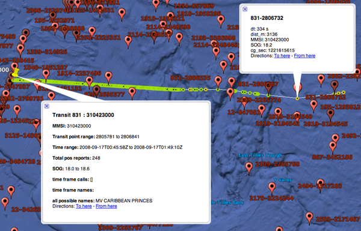
<br /><br />
However, Brad has checked all of our 3000+ transits and discovered this troublesome track:
<br /><br />
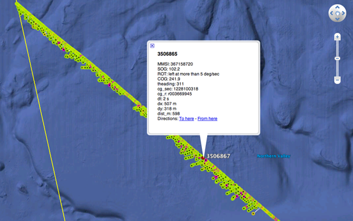
<br /><br />
Unlike my previous trouble that turned out to be a bug in handling
points in my code, I am pretty sure that this is trouble with GPS on
the ship.  Our first pass algorithm for trouble detection is
definitely missing this kind of thing.  Careful tracking of reported
speed over ground (SOG), course over ground (COG), heading, and
position derived values with time should be able to catch this type of
thing, but I don't have a solid time basis for this data.  Best guess is
that this is multipath with recovery.
<br /><br />
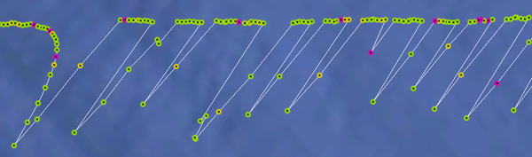
</div>
</div>

<div class="posted">
<br />Posted by <span class="item-creator">Kurt</span>
| <a class="link" href="2009-11.html#e2009-11-09T13_40_14.txt">Permalink</a>

<!-- <br /><a href="archives/2009-11-09T21_11_04.html#comments">Comments</a> -->
</div>
</div>
<div class="item">
<a id="e2009-11-09T10_40_29.txt" name="e2009-11-09T10_40_29.txt"></a>
<h2 class="date">11.09.2009 10:40</h2>
<div class="blogbody">
<h3 class="title">Preventing updatedb from scanning attached drives</h3>
<div class="item-description">
On my Mac, I don't want updatedb searching my Time Machine backup drive (or any
other attached media), so I just tried tweaking the
/sw/etc/updatedb.conf file to exclude some areas.  I can't seem to
do more than just one.  If I add /private/tmp, I get this complaint:
<pre><b>sudo /sw32/etc/cron.daily/findutils</b>
/sw32/etc/updatedb.conf: line 11: /private/tmp: is a directory</pre>
But this config seems to mostly work okay...
<pre>DAYS=1
STATUS=on
PRUNEFS=/Volumes</pre>
However, find seems to have some trouble with directories:
<pre>/sw32/bin/find: /usr/share/man/man3: Cannot allocate memory</pre>
I find myself using both mdfind (macosx spotlight) and locate depending
on what I am trying to track down.
</div>
</div>

<div class="posted">
<br />Posted by <span class="item-creator">Kurt</span>
| <a class="link" href="2009-11.html#e2009-11-09T10_40_29.txt">Permalink</a>

<!-- <br /><a href="archives/2009-11-09T13_40_14.html#comments">Comments</a> -->
</div>
</div>
<div class="item">
<a id="e2009-11-08T14_51_17.txt" name="e2009-11-08T14_51_17.txt"></a>
<h2 class="date">11.08.2009 14:51</h2>
<div class="blogbody">
<h3 class="title">IMO AIS Discrepancy Reports</h3>
<div class="item-description">
MarineLink just posted about <a
href="http://www3.marinelink.com/Story/ShowStory.aspx?StoryID=217269">IMO's
- AIS Discrepancy Reports</a>: <a
href="http://www.imo.org/includes/blastDataOnly.asp/data_id%3D26677/4.pdf">MSC.6/Circ.4
AIS Discrepancy Reports - July to September 2009 (Quarterly
report)</a> (PDF).  The report for those months has about 50 vessels
that had broadcast incorrect information.  I have to say that this
list is not very helpful.  It's reports only a small fraction of the what is going on there with errors.  There isn't a single mention of a MMSI of 0, 1, 1193046, etc. 
<br /><br />
An example from just three receivers in the Boston area that were
seeing the nauticast error / default state of a MMSI of 1193046.  This
is from 2008, but I am sure that 2009 is not much better, because
there is no effort to push these vessels to fix things.
<pre><b>echo 'select distinct(name) from shipdata where userid = 1193046;' | psql ais2008 | sort -n</b>
 ABE LINCOLN
 ASPHALT SEMINOLE
 CAMERONS POINT
 ENTERPRISE
 LOUKAS I
 LUCINDA SMITH
 MV TRADER
 MY MUSE
 NAUTICAST
 PACIFIC GUARDIAN
 PI MANHATTAN
 WILLIAM BRECKINRIDGE
 ZIM PANAMA</pre>
A PDF circular is not a helpful publication for those in the community who are
using this data.  See <a href="http://vislab-ccom.unh.edu/~schwehr/papers/2009ushydro-calder_schwehr_AIS_Traffic_Analysis.pdf">Calder and Schwehr, 2009</a> for 
a more detailed view of trying to validate AIS.
</div>
</div>

<div class="posted">
<br />Posted by <span class="item-creator">Kurt</span>
| <a class="link" href="2009-11.html#e2009-11-08T14_51_17.txt">Permalink</a>

<!-- <br /><a href="archives/2009-11-09T10_40_29.html#comments">Comments</a> -->
</div>
</div>
<div class="item">
<a id="e2009-11-05T05_34_45.txt" name="e2009-11-05T05_34_45.txt"></a>
<h2 class="date">11.05.2009 05:34</h2>
<div class="blogbody">
<h3 class="title">Collecting data on Google Android phones</h3>
<div class="item-description">
This is a very cool project!  Think environmental response, Coast
Pilot updates, chart updates.  If only it worked on the iPhone
too. Thanks to Eric Park of the Disaster Cam / GeoCam team at NASA Ames
for the pointer.
<br /><br />
<a href="http://code.google.com/p/open-data-kit/">Open Data Kit (ODK)</a>
<br /><br />
<object width="480" height="385"><param name="movie" value="http://www.youtube.com/v/lo8LaFFSkV8&hl=en&fs=1&color1=0x402061&color2=0x9461ca"></param><param name="allowFullScreen" value="true"></param><param name="allowscriptaccess" value="always"></param><embed src="http://www.youtube.com/v/lo8LaFFSkV8&hl=en&fs=1&color1=0x402061&color2=0x9461ca" type="application/x-shockwave-flash" allowscriptaccess="always" allowfullscreen="true" width="480" height="385"></embed></object>
</div>
</div>

<div class="posted">
<br />Posted by <span class="item-creator">Kurt</span>
| <a class="link" href="2009-11.html#e2009-11-05T05_34_45.txt">Permalink</a>

<!-- <br /><a href="archives/2009-11-08T14_51_17.html#comments">Comments</a> -->
</div>
</div>
<div class="item">
<a id="e2009-11-04T06_57_38.txt" name="e2009-11-04T06_57_38.txt"></a>
<h2 class="date">11.04.2009 06:57</h2>
<div class="blogbody">
<h3 class="title">Fall is finished</h3>
<div class="item-description">
The leaves are now off the trees in the yard and there is an enormous
pile of leaves obscuring the compost pile.
<br /><br />

<br /><br />

</div>
</div>

<div class="posted">
<br />Posted by <span class="item-creator">Kurt</span>
| <a class="link" href="2009-11.html#e2009-11-04T06_57_38.txt">Permalink</a>

<!-- <br /><a href="archives/2009-11-05T05_34_45.html#comments">Comments</a> -->
</div>
</div>
<div class="item">
<a id="e2009-11-03T15_48_49.txt" name="e2009-11-03T15_48_49.txt"></a>
<h2 class="date">11.03.2009 15:48</h2>
<div class="blogbody">
<h3 class="title">Speaking Weds and Thurs this week</h3>
<div class="item-description">
I am giving two talks in NH this week.  Tomorrow (Weds Nov 5), I will be at Colby-Sawyer College in New London, NH.
<pre><b>Landing Robots on Another Planet</b>
<!-- -->
Ivey Science Center Room 201
    Colby-Sawyer College
      New London, NH
<!-- -->
This presentation will give an insider's view of landing robots on
another planet. Research assistant professor has Kurt Schwehr Mars has
worked on NASA mission control teams and designed computer vision, 3D
visualization, and on-board driving software for NASA's Mars
exploration program.</pre>
And the next day, I'll be speaking at UNH:
<pre><b>Visualizing Mars Exploration</b>
<!-- -->
CS900: Thursday, November 5th, 12:40-2:00
       N113, Kingsbury Hall
      Univ. of New Hampshire
<!-- -->
With the successful landing of the Phoenix Mars Lander comes the task
of visualizing the spacecraft, its operations and surrounding
environment. It requires a diverse team and set of software to provide
a suite of visualizations that shed light on the operations of this
visitor to another world. The core set of tools range from web-based
production tracking (Image Products Release Website), to custom 3D
transformation software, through to studio quality 2D and 3D video
production. Ground data systems from bash to java support the
visualization team in their production of still and video content that
is delivered to the public. Recently the Google Earth "Mars Mode" has
enabled the casual user to experience missions at home in the spatial
context of the planet in a way that was only available on super
computers just a few years ago. This presentation focuses on the data
management and visualization aspects of recent NASA Mars surface
missions.</pre>
</div>
</div>

<div class="posted">
<br />Posted by <span class="item-creator">Kurt</span>
| <a class="link" href="2009-11.html#e2009-11-03T15_48_49.txt">Permalink</a>

<!-- <br /><a href="archives/2009-11-04T06_57_38.html#comments">Comments</a> -->
</div>
</div>
<div class="item">
<a id="e2009-11-03T10_12_52.txt" name="e2009-11-03T10_12_52.txt"></a>
<h2 class="date">11.03.2009 10:12</h2>
<div class="blogbody">
<h3 class="title">Transit analysis Google Earth Viz</h3>
<div class="item-description">
I found and squashed the that gave me jitter in the latitude... I was
not properly splitting up the WTK "POINT(x y)".  Here are three
transits to show how we are currently looking at the transits in great
detail.  The color codes show which receiver recorded the position report.
I take the first station to report in and remove the other 2 position reports
as duplicates.
<br /><br />
<a href="../attachments/2009-11/2008-transit-analysis.kmz">2008-transit-analysis.kmz</a>
<br /><br />
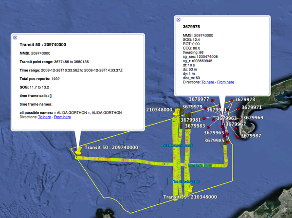
</div>
</div>

<div class="posted">
<br />Posted by <span class="item-creator">Kurt</span>
| <a class="link" href="2009-11.html#e2009-11-03T10_12_52.txt">Permalink</a>

<!-- <br /><a href="archives/2009-11-03T15_48_49.html#comments">Comments</a> -->
</div>
</div>
<div class="item">
<a id="e2009-11-02T15_48_15.txt" name="e2009-11-02T15_48_15.txt"></a>
<h2 class="date">11.02.2009 15:48</h2>
<div class="blogbody">
<h3 class="title">X11 crash in 10.6</h3>
<div class="item-description">
I'm using the Apple X11 in Mac OSX 10.6 and I'm not very happy with
it.  In addition to the Apple key only sort of working like the meta
key (Apple-F moves forward a word and capitalized in a xterm bash),
the whole xserver just crashed.  Thanks.
<pre>Nov  2 15:44:13 catbox [0x0-0x2d92d9].org.x.X11[6029]: X11.app: Launching /usr/X11/bin/xterm:
Nov  2 15:44:13 catbox [0x0-0x2d92d9].org.x.X11[6029]:  argv[0] = /bin/sh
Nov  2 15:44:13 catbox [0x0-0x2d92d9].org.x.X11[6029]:  argv[1] = -c
Nov  2 15:44:13 catbox [0x0-0x2d92d9].org.x.X11[6029]:  argv[2] = /usr/X11/bin/xterm
Nov  2 15:44:14 catbox org.x.startx[6136]: Xquartz: start_x11_server: (ipc/mig) server died
Nov  2 15:44:14 catbox com.apple.launchd.peruser.501[132] ([0x0-0x2d92d9].org.x.X11[6029]): Exited with exit code: 1
<b>Nov  2 15:44:14 catbox org.x.startx[6136]: /usr/X11/bin/xinit:  connection to X server lost.</b>
Nov  2 15:44:14 catbox [0x0-0x2d92d9].org.x.X11[0]: xterm:  fatal IO error 32 (Broken pipe) or KillClient on X server "/tmp/launch-CfHvNS/:0"
Nov  2 15:44:15 catbox login[6261]: USER_PROCESS: 6261 ttys000
Nov  2 15:44:16 catbox org.x.privileged_startx[6149]: font_cache: Done</pre>
</div>
</div>

<div class="posted">
<br />Posted by <span class="item-creator">Kurt</span>
| <a class="link" href="2009-11.html#e2009-11-02T15_48_15.txt">Permalink</a>

<!-- <br /><a href="archives/2009-11-03T10_12_52.html#comments">Comments</a> -->
</div>
</div>
<div class="item">
<a id="e2009-11-02T06_25_51.txt" name="e2009-11-02T06_25_51.txt"></a>
<h2 class="date">11.02.2009 06:25</h2>
<div class="blogbody">
<h3 class="title">ssh tunneling made easier</h3>
<div class="item-description">
At CCOM, we have a nat'ed address space for 99% of our systems.  They
live in a a ccom.nh local domain spread over a bunch of 192.168.*.*
subnets.  This reduces the exposure of our windows machines to trouble
from the outside internet and lets our IT team manage IP addresses
without having to interact with with university IP networking team
most of the time.  For me, this presents a challenge as we do not have
VPN setup.  Some CCOM members get to their Windows boxes via 
<a href="http://www.bitvise.com/download-area">Tunnelier</a> (not free
software).  I use Macs that come standard with OpenSSH.  I have a number of
bash alias that make life easier, e.g.:
<pre>alias wikitunnel='ssh -L 8080:wiki.ccom.nh:80 ccom.unh.edu'
alias wiki='open http://localhost:8080'
alias mymactunnel='ssh -L 8001:mymac.ccom.nh:22 ccom.unh.edu'
alias mymac='ssh -p 8001 localhost'</pre>
The first two let me use the internal wiki website remotely, while the
second two let me lot into my Mac desktop.  Managing all those port
numbers is no fun and it requires I keep my port numbers straight.
Chaoyi recently pointed out that, for ssh, having all these aliases is not
required.  I now have a file that manages the proxy for ssh into CCOM for me:
~/.ssh/config:
<pre>Host *.ccom.nh
ProxyCommand ssh USERNAME@ccom.unh.edu /home/USERNAME/bin/nc -w 1 %h %p</pre>
Change the USERNAME to be your login and tweak the home path to point to 
where ever nc is installed.
I had to put a copy of netcat in my bin directory, but now I am able to 
connect to any machine inside our domain that has sshd available.
<pre>ssh snares.ccom.nh
Last login: Mon Nov  2 06:25:42 2009 from gateway.ccom.nh
<!-- -->
# schwehr@mymac.ccom.nh 1 $ cd && exit
logout
Connection to mymac.ccom.nh closed.
Killed by signal 1.</pre>
That killed by sig 1 is a bit weird, but I don't notice it any more.
scp also works for copying files:
<pre>scp mymac.ccom.nh:foo bar
foo                                       100% 5869     5.7KB/s   00:00    
Killed by signal 1.</pre>
Not as easy as living in a VPN.  However, it works and what would you do if you
had to be VPN'ed into 2 or 3 different institutions to get your job done?
<br /><br />
Trackback: Val mentions using fuse and autossh for <a href="http://www.aliceandval.com/valswork/blog/archives/2009/12/29/ssh_tunneling/index.html">SSH tunneling</a> [Val's Brain Log]
</div>
</div>

<div class="posted">
<br />Posted by <span class="item-creator">Kurt</span>
| <a class="link" href="2009-11.html#e2009-11-02T06_25_51.txt">Permalink</a>

<!-- <br /><a href="archives/2009-11-02T15_48_15.html#comments">Comments</a> -->
</div>
</div>
<div class="item">
<a id="e2009-11-02T06_24_19.txt" name="e2009-11-02T06_24_19.txt"></a>
<h2 class="date">11.02.2009 06:24</h2>
<div class="blogbody">
<h3 class="title">Mastering django resources</h3>
<div class="item-description">
<a href="http://www.ryankaskel.com/2009/10/31/mastering-django-part-1/">Mastering Django - Part 1</a> [Ryan Kaskel]
<pre>...
This article is intended to be a collection of resources for a Python
programmer who wants to learn Django. You don't need to be an expert,
but I assume that you have read an introductory book on Python and
know the basics. I hope this guide will prevent other programmers from
giving up on Django like I first did and help them master the web
application framework. ...</pre>
</div>
</div>

<div class="posted">
<br />Posted by <span class="item-creator">Kurt</span>
| <a class="link" href="2009-11.html#e2009-11-02T06_24_19.txt">Permalink</a>

<!-- <br /><a href="archives/2009-11-02T06_25_51.html#comments">Comments</a> -->
</div>
</div>
</div>

</div>

<div id="links">

<div class="calendar">
<table border="0" cellspacing="4" cellpadding="0" summary="Calendar with links to days with entries">
<caption class="calendarhead">November 2009</caption>
<tr>
<th align="center"><span class="calendarday">Su</span></th>
<th align="center"><span class="calendarday">Mo</span></th>
<th align="center"><span class="calendarday">Tu</span></th>
<th align="center"><span class="calendarday">We</span></th>
<th align="center"><span class="calendarday">Th</span></th>
<th align="center"><span class="calendarday">Fr</span></th>
<th align="center"><span class="calendarday">Sa</span></th>
</tr>
<tr>
             
<td align="center"><span class="calendar">1</span></td>
<td align="center"><span class="calendar"><a href="2009-11.html#e2009-11-02T15_48_15.txt">2</a></span></td>
<td align="center"><span class="calendar"><a href="2009-11.html#e2009-11-03T15_48_49.txt">3</a></span></td>
<td align="center"><span class="calendar"><a href="2009-11.html#e2009-11-04T06_57_38.txt">4</a></span></td>
<td align="center"><span class="calendar"><a href="2009-11.html#e2009-11-05T05_34_45.txt">5</a></span></td>
<td align="center"><span class="calendar">6</span></td>
<td align="center"><span class="calendar">7</span></td>
</tr>
<tr>
        
<td align="center"><span class="calendar"><a href="2009-11.html#e2009-11-08T14_51_17.txt">8</a></span></td>
<td align="center"><span class="calendar"><a href="2009-11.html#e2009-11-09T21_11_04.txt">9</a></span></td>
<td align="center"><span class="calendar"><a href="2009-11.html#e2009-11-10T09_29_45.txt">10</a></span></td>
<td align="center"><span class="calendar">11</span></td>
<td align="center"><span class="calendar"><a href="2009-11.html#e2009-11-12T09_36_32.txt">12</a></span></td>
<td align="center"><span class="calendar">13</span></td>
<td align="center"><span class="calendar"><a href="2009-11.html#e2009-11-14T19_24_42.txt">14</a></span></td>
</tr>
<tr>
      
<td align="center"><span class="calendar">15</span></td>
<td align="center"><span class="calendar"><a href="2009-11.html#e2009-11-16T10_53_33.txt">16</a></span></td>
<td align="center"><span class="calendar"><a href="2009-11.html#e2009-11-17T16_18_49.txt">17</a></span></td>
<td align="center"><span class="calendar">18</span></td>
<td align="center"><span class="calendar">19</span></td>
<td align="center"><span class="calendar">20</span></td>
<td align="center"><span class="calendar"><a href="2009-11.html#e2009-11-21T10_29_19.txt">21</a></span></td>
</tr>
<tr>
      
<td align="center"><span class="calendar">22</span></td>
<td align="center"><span class="calendar">23</span></td>
<td align="center"><span class="calendar"><a href="2009-11.html#e2009-11-24T07_49_25.txt">24</a></span></td>
<td align="center"><span class="calendar"><a href="2009-11.html#e2009-11-25T09_32_23.txt">25</a></span></td>
<td align="center"><span class="calendar">26</span></td>
<td align="center"><span class="calendar">27</span></td>
<td align="center"><span class="calendar"><a href="2009-11.html#e2009-11-28T18_48_11.txt">28</a></span></td>
</tr>
<tr>
 
<td align="center"><span class="calendar"><a href="2009-11.html#e2009-11-29T18_13_16.txt">29</a></span></td>
<td align="center"><span class="calendar"><a href="2009-11.html#e2009-11-30T12_09_11.txt">30</a></span></td>
</tr>
</table>
</div>

</div>

<br clear="all" />

</body>
</html>
